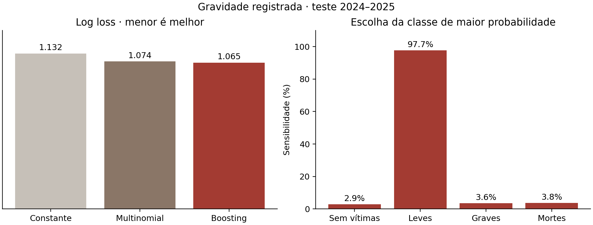
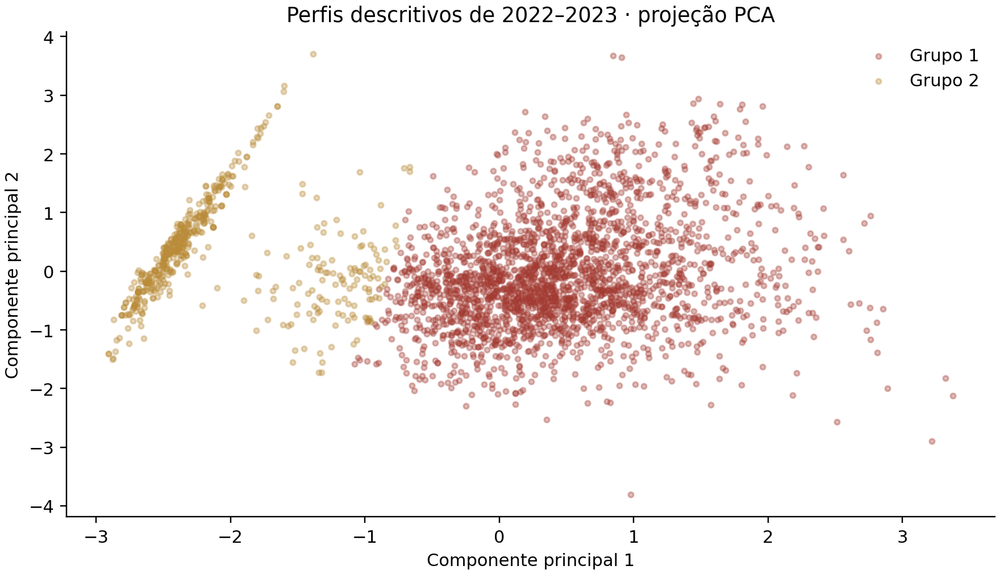

Este relatório documenta o material de apoio à avaliação do projeto O que o Estado vê escolhas de governança e visibilidade nas rodovias federais, de Débora Cristina Coutinho Vilas Bôas, orientado pela Profa. Dra. Suzana Rodrigues no Doutorado em Administração da Universidade FUMEC. A qualificação foi informada para 27 de outubro de 2026 às 15h. As extensões foram preparadas como subsídio à discussão e não são atribuídas como resultados já produzidos pela autora.
O conjunto permite auditar fontes, explorar registros, comparar associações com exposição, examinar gravidade e persistência e selecionar candidatos à análise documental. As análises de aprendizado de máquina acrescentam ganhos preditivos modestos e perfis descritivos estáveis. O mecanismo institucional permanece uma contribuição a demonstrar: dados cadastrais, modelos e resíduos não identificam por si só qualidade de governança, eventos ocultos ou ausência de ação.
A documentação é apresentada na tela e neste arquivo DOCX. Os códigos, fontes, dados derivados e saídas analíticas são públicos. Não foi publicada a íntegra do documento privado da proposta. O relatório é uma síntese metodológica e crítica de apoio, sujeita à discussão com autora e orientação.
A seção 1.5 do projeto argumenta que os registros oficiais dependem da capacidade de observar e registrar do arranjo que os produz e que reconhecer o risco não assegura resposta estatal. Nesta síntese, a tese a demonstrar é que os arranjos de governança condicionam a produção da informação sobre os sinistros e sua transformação em resposta. Essa proposição não equivale a concluir que concessão seja mais ou menos segura.
O projeto já articula legibilidade estatal em Scott, governança regulatória em arranjos híbridos, instrumentos de ação pública, mensuração e auditabilidade, uso da informação de desempenho e valor público. Portanto, essas bases não foram inventadas pelo laboratório. A revisão organiza essa articulação em diagramas: como regras e instrumentos produzem informação, como categorias permitem comparar e quais responsabilidades e recursos conectam o diagnóstico à resposta.
A VGPR é definida no projeto como capacidade de observar e registrar riscos e resultados vinculados ao local, à data e ao responsável. É um construto formativo. Instrumentos de monitoramento e vinculação são dimensões anteriores ao sinistro e medidas principais; cobertura é dimensão resultante e critério de validação. A proposta não adota índice composto principal. A cobertura efetiva ainda precisa de evidência que não seja apenas o resíduo de um modelo.
Transparência trata de divulgação e accountability de explicação e responsabilização; a proposta situa a visibilidade na observação que antecede essas relações. O PDCA organiza a trilha de evidências, mas incentivos, coordenação e capacidade explicam possíveis interrupções. Persistência dos danos não prova interrupção. A contribuição pretendida exige demonstrar que o mecanismo acrescenta explicação distinta a conceitos próximos e admite refutação.
| Componente | Projeto original | Trabalho executado ou proposto no laboratório |
|---|---|---|
| Problema e teoria | VGPR, legibilidade, arranjos híbridos e resposta pelo PDCA | Síntese explícita, diagramas e confronto dos limites de identificação |
| Dados | Integração de PRF, SNV, tráfego, instrumentos, intervenções e documentos | Aquisição de 26 arquivos originais, manifesto e derivados rastreáveis |
| Análise quantitativa | Diagnóstico, contagens esperadas, gravidade e persistência | Auditoria, logística, NB2 com exposição, multinomial e testes temporais |
| Aprendizado de máquina | Não é o núcleo analítico original descrito | Boosting de gravidade, boosting Poisson e agrupamento avaliados |
| Governança | Operacionalização prevista por instrumentos, vínculo e documentos | Matriz de viabilidade e contagens cadastrais executadas; histórico institucional pendente |
| Produtos | Base integrada, mapa e modelo de governança observável | Painel interativo, notebook, apresentação web e PowerPoint, relatório DOCX |
PRF 2022–2025 contém 278.103 ocorrências, 23.274 pessoas mortas e 77.521 feridos graves na versão preservada. Uma linha representa uma ocorrência. O total de pessoas mortas difere do número de sinistros fatais. A versão anual pode divergir de números preliminares do projeto por revisões da fonte. A auditoria não corrige divergências por suposição.
| Ano | Sinistros | Mortes | Feridos graves | BR km ou UF inválidos |
|---|---|---|---|---|
| 2022 | 64.606 | 5.441 | 18.173 | 199 |
| 2023 | 67.766 | 5.627 | 18.958 | 160 |
| 2024 | 73.202 | 6.163 | 20.372 | 189 |
| 2025 | 72.529 | 6.043 | 20.018 | 167 |
O SNV 202604A é referência cadastral e cartográfica de 2026. A geometria foi simplificada apenas para apresentação. Vinculação por UF, BR e intervalo de km não certifica a exatidão do local nem reconstrói a vigência histórica dos contratos. O mapa do painel utiliza uma projeção Mercator explícita com escala uniforme de tela e a mesma transformação para limites e rodovias. Essa projeção preserva ângulos locais, não áreas; não há estiramento independente para preencher o cartão.
O PNCT disponibiliza estimativas anuais de tráfego para os dois arranjos. Utilizam-se os limites dos segmentos estimados, não a repetição dos limites originais após subdivisão. Somam-se os sentidos C e D; a extensão é a diferença entre limite final e inicial; a exposição multiplica VMD, extensão e dias do ano. Em 2025, o VMD usa julho de 2024 a junho de 2025 segundo a nota técnica. A incerteza do VMD não foi propagada aos intervalos dos modelos.
| Ano | Segmentos elegíveis | PRF vinculados | PRF total | Cobertura |
|---|---|---|---|---|
| 2022 | 3.989 | 58.406 | 64.606 | 90,4% |
| 2023 | 4.003 | 61.407 | 67.766 | 90,6% |
| 2024 | 5.027 | 62.518 | 73.202 | 85,4% |
| 2025 | 5.030 | 61.917 | 72.529 | 85,4% |
Os arquivos da ANTT incluem instrumentos, investimentos e passagens em pedágios. Passagens não são veículos únicos nem VMD por segmento. Linhas estruturalmente inválidas são segregadas; uma foi identificada no acompanhamento anual. Cadastros de SAT, radares e CFTV têm campos de situação e referência de malha; ano_do_pnv_snv não é ano de instalação. Ausência de data de inativação preenchida não comprova operação contínua.
A auditoria examina IDs por ano, conflitos, datas, localização, coordenadas, classificação e soma de pessoas. Gravidade deriva dos campos numéricos: morte prevalece sobre lesão grave, que prevalece sobre leve. Divergência aritmética sinaliza investigação, sem imputação ou correção automática. Um mesmo registro pode atender a várias regras de qualidade; suas contagens não devem ser somadas como casos exclusivos.
A regressão logística usa o desfecho de ao menos uma morte entre sinistros registrados, com noite, uso urbano, pista dupla ou múltipla, chuva, fim de semana, UF e ano. A amostra é de 277.388 ocorrências após 715 exclusões. A covariância sanduíche é agrupada em 249 corredores UF–BR, com correção finita e quantil t. A OR é uma razão de chances condicionada aos registros, não risco por viagem ou efeito causal.
| Fator | OR | IC 95 por cento |
|---|---|---|
| noite | 1,937 | 1,821 a 2,059 |
| urbano | 0,552 | 0,509 a 0,599 |
| dupla | 0,544 | 0,499 a 0,593 |
| multipla | 0,622 | 0,489 a 0,791 |
| chuva | 0,865 | 0,805 a 0,930 |
| fim_semana | 1,133 | 1,087 a 1,181 |
A classificação multinomial distingue quatro categorias exclusivas de gravidade máxima. Referência: sem vítimas. Controles incluem as características do modelo logístico e seis tipos mais frequentes selecionados no treino, além de UF e ano no ajuste completo. A RRR compara a razão entre a probabilidade de uma categoria e a de sem vítimas entre níveis do fator; não é risco relativo marginal. A hipótese IIA e a cobertura distinta da referência são limitações. Há sensibilidade sem tipo de sinistro. O tipo é conhecido após o evento; o modelo não antecipa acidentes antes da viagem.
O multinomial foi treinado em 2022–2023 e avaliado em 2024–2025 sem indicadores futuros de ano. Log loss de 1,074 versus 1,132 da referência; acurácia de 56,3% versus 56,1%. Isso mostra pequena melhora probabilística e quase nenhum ganho na classe mais provável. O arquivo completo contém matriz de confusão e calibração por desfecho.
Os modelos NB2 de sinistros e mortes usam offset da exposição em unidades de 100 milhões de veículos km, com controles de pista, log VMD, proporção de pesados, classificação não simulável, UF e ano. A variância permite sobredispersão. A IRR é associação condicionada ao modelo. A classificação de administração é cadastral, sem validação de cada transição contratual.
| Análise de mortes | IRR de concessão | IC 95 por cento |
|---|---|---|
| Principal | 1,197 | 1,013 a 1,413 |
| Sem 2025 | 1,207 | 1,019 a 1,430 |
| Sem não simuláveis | 1,174 | 0,987 a 1,395 |
Na sensibilidade sem segmentos não simuláveis, o IC inclui 1. Os dados e o modelo tornam-se compatíveis com ausência de associação nessa escala; isso não comprova igualdade. A comparação ajustada pode ter sentido diferente da bruta. Não se conclui superioridade causal de um arranjo. O teste temporal de mortes teve desvio Poisson 1,599 e MAE 0,978.
A persistência correlaciona mortes em 2022–2023 e 2024–2025 em 6.389 intervalos UF–BR de 10 km com registro em algum ano. Spearman 0,460; IC percentílico 0,420 a 0,499 em 500 reamostragens de corredores, semente 20261017. O universo utiliza presença em todo o período, inclusive anos posteriores ao primeiro biênio; não é um censo da malha nem previsão prospectiva. A persistência ajuda a selecionar locais para investigar resposta, sem provar inação.
Foram executados três experimentos. Para as tarefas preditivas, dois candidatos previamente definidos são escolhidos por treino em 2022 e validação em 2023; o ajuste final usa 2022–2023 e o teste usa 2024–2025. Não se escolhem parâmetros com os resultados de teste. O teste espacial temporal reserva corredores inteiros por hash com semente 20261017 e também os exclui da seleção. Cerca de 20% dos corredores são reservados, não necessariamente 20% dos registros. Categorias e transformações são aprendidas no treino. O scikit learn utilizado é 1.7.2.
HistGradientBoostingClassifier estima quatro categorias com as seis variáveis de contexto, UF e tipos selecionados em 2022. Não usa mortos ou feridos como preditores. O número de árvores, folhas e regularização é escolhido na validação. Uma temperatura escalar é ajustada nas probabilidades de 2023 e aplicada ao ajuste final; a efetividade dessa transferência é avaliada no teste, e as métricas sem calibração também são preservadas. Não há balanceamento artificial de classes.
| Modelo no teste temporal | Log loss menor é melhor | Brier menor é melhor | Acurácia |
|---|---|---|---|
| Constante | 1,1320 | 0,6114 | 56,12% |
| Multinomial | 1,0737 | 0,5841 | 56,27% |
| Boosting calibrado | 1,0648 | 0,5806 | 56,33% |
A melhora em log loss e Brier é modesta e não representa comprovação inferencial de superioridade. A sensibilidade fatal pela categoria de maior probabilidade é 3,79%; AP fatal 0,192 versus prevalência 0,072. Acurácia balanceada 0,270 e F1 macro 0,227 mostram o limite que a acurácia global esconde. O ganho útil está na comparação de probabilidades e na investigação de padrões; não é ferramenta operacional validada.

HistGradientBoostingRegressor usa perda Poisson, alvo de mortes por exposição e pesos proporcionais à exposição. A previsão de taxa é multiplicada pela exposição para voltar à contagem. A parte ajustável da perda corresponde à modelagem de contagens com exposição. Os controles são comparáveis aos do NB2. O VMD contemporâneo está disponível na base avaliada; esse teste não representa previsão que antecede a disponibilidade do tráfego.
| Modelo no mesmo teste | Desvio Poisson | MAE | Mortes previstas |
|---|---|---|---|
| Taxa constante | 1,8555 | 1,0459 | 10.506,1 |
| NB2 | 1,5989 | 0,9781 | 10.810,1 |
| Boosting | 1,5453 | 0,9460 | 10.374,2 |
O teste contém 9.859 segmentos ano e 10.671 mortes registradas. O boosting reduz o desvio em 3,35% em relação ao NB2 e prevê 10.374,2 mortes. Essa diferença é uma medida preditiva na amostra de teste, sem IC pareado inferencial. As previsões e os resíduos são disponibilizados para auditoria. Um resíduo pode refletir variação aleatória, covariável ausente, erro cadastral, exposição ou especificação; não é uma estimativa identificada de sinistro oculto.
| Tarefa | Teste reservado | Modelo | Referência constante |
|---|---|---|---|
| Gravidade | 41.787 ocorrências | Log loss 1,0684 | Log loss 1,1271 |
| Contagens | 2.212 segmentos ano | Desvio 1,7586 | Desvio 2,0445 |
O teste espacial temporal avalia outros corredores e anos, excluídos do treino e da seleção. Não é validação externa com uma fonte independente de sinistros e não identifica causalidade. As métricas entre testes temporal e espacial não devem ser comparadas como se as amostras tivessem a mesma composição.
O agrupamento usa 3.020 segmentos com os mesmos limites físicos em 2022 e 2023. As variáveis são log VMD, proporção de pesados, duplicação e log1p das taxas registradas de sinistros e mortes. RobustScaler e corte em mais ou menos cinco unidades padronizadas reduzem a influência de extremos. Foram avaliados k de 2 a 6 por silhouette e ARI em oito subamostras de 80%. O critério exige grupo mínimo de 5% e ARI médio de pelo menos 0,70 antes de escolher a maior silhouette.
A solução selecionou 2 grupos, silhouette 0,392 e ARI médio 0,996. Estabilidade nas reamostragens não comprova que existam classes naturais ou que elas representem governança. Taxas iniciais fazem parte da formação: diferenças iniciais de danos entre grupos não são validação independente.
| Grupo | Segmentos | VMD mediano | Taxa de sinistros | Taxa de mortes |
|---|---|---|---|---|
| G1 | 2.469 | 4.485,5 | 53,442 | 4,469 |
| G2 | 551 | 2.805,5 | 1,805 | 0,435 |
As taxas são agregadas por exposição em unidades de 100 milhões de veículos km, referentes ao período inicial. O grupo de poucos registros pode refletir perfis de risco, observação ou problemas de compatibilidade; não recebe rótulo de segurança ou de invisibilidade. Na comparação futura, 1.880 de 3.020 segmentos possuem limites exatamente iguais em ao menos um ano posterior, cobertura de 62,3%. Essa seleção limita a comparação temporal.

Foram listados candidatos documentais com mesma UF e grupo e administração cadastral distinta, próximos nas características padronizadas. A distância não é geográfica nem medida de equivalência institucional. A lista prioriza revisão de episódios e documentos; não constitui pareamento causal. Deve incluir casos contrários à hipótese e confirmar localização, vigência, obrigações e resposta.
A importância por permutação mede a perda preditiva ao embaralhar uma variável no teste; não altera o ajuste. Variáveis correlacionadas podem substituir umas às outras. Três repetições indicam variação computacional, sem constituir intervalos inferenciais. A utilidade está em formular perguntas sobre combinações e em verificar se modelos mais flexíveis acrescentam previsão. Ganhos modestos e baixa identificação fatal restringem o uso operacional.
A contribuição institucional não decorre do algoritmo. A seleção de perfis e os casos mal previstos ajudam a escolher episódios para reconstruir quem tinha informação, obrigação e recursos, o que foi decidido, o que foi entregue e o que mudou depois. Só essa ligação entre medida institucional e trajetória temporal pode aproximar a evidência do mecanismo proposto na tese.
Responsabilidade e incentivos — Obrigação de informar e meta de segurança. Presença, definição, periodicidade, responsável e consequência contratual; codificar separadamente, sem somar em índice arbitrário. Unidade: Contrato/aditivo–trecho–período. Fonte: Contratos, PER e aditivos ANTT; instrumentos equivalentes DNIT. Situação: Documentos públicos identificados; codificação não executada. Condição para teste: Vigência e aplicabilidade ao trecho; desenho de codificação e revisão independente.
Capacidade de observação — SAT, CFTV e radares cadastrados. Contagem por categoria e situação; densidade por 100 km somente após compatibilizar cadastro e extensão, sem duplicidades. Unidade: Equipamento–trecho–data da fotografia cadastral. Fonte: antt-sat-3.csv; antt-cftv-1.csv; antt-radar-2.csv. Situação: Arquivos públicos preservados; inventário e contagens cadastrais disponíveis. Condição para teste: Sem data de início e sem registros preenchidos de inativação; situação atual não comprova operação histórica. ano_do_pnv_snv é referência de malha, não ano de instalação.
Implementação — Execução prevista versus realizada. Comparar previsto_anual e executado_anual somente após confirmar unidade, convenção e versão; nunca assumir que sejam valores monetários. Unidade: Projeto–planejamento–versão. Fonte: antt-acompanhamento-anual-0.csv. Situação: 1.180 linhas válidas; uma linha estruturalmente inválida segregada. Condição para teste: Planejamento pode ter atualização posterior ao período; normalizar rodovia/km, distinguir versão e evitar vazamento temporal.
Entrega — Intervenção concluída e certificação. Presença de data_de_conclusao, obra_certificada e documento de certificação; vincular ao projeto e trecho. Unidade: Obra–trecho–data. Fonte: antt-encerramento-investimentos-0.csv. Situação: 253 registros com data de conclusão preenchida; ainda sem validação histórica de cada intervenção. Condição para teste: Conclusão declarada não mede eficácia. Falta confirmar objeto, localização, vínculo, data e situação de segurança antes/depois.
Fiscalização — Inspeções e cumprimento de determinações. Número, objeto, prazo e cumprimento; usar também oportunidade/intensidade de fiscalização como denominador quando apropriado. Unidade: Determinação–responsável–trecho–período. Fonte: Relatórios e processos regulatórios ANTT; fiscalização de contratos DNIT. Situação: Fontes públicas identificadas; base histórica não integrada. Condição para teste: Mais autuações pode significar mais fiscalização ou mais descumprimento; não interpretar automaticamente como pior governança.
Resposta operacional — Tempo e cobertura de atendimento. Tempo entre chamado e chegada, tipo de atendimento e cobertura, conforme dicionário; comparar perfis semelhantes. Unidade: Chamado ou agregação compatível–trecho–período. Fonte: ANTT atendimento médico e mecânico. Situação: Fonte pública identificada; ainda não integrada. Condição para teste: Média agregada não identifica trajetória individual; controlar gravidade, distância, horário e seleção dos chamados.
Coordenação e aprendizagem — Trajetória do alerta até a avaliação. Datas, responsáveis e evidências de diagnóstico, encaminhamento, decisão, execução, avaliação e revisão. Unidade: Episódio de risco e resposta. Fonte: Processos, relatórios, atas, ordens de serviço; entrevistas complementares. Situação: Protocolo de coleta proposto; episódios ainda não reconstruídos. Condição para teste: Documento não localizado é ausência de evidência acessível, não prova de ausência de ação.
1. Definir unidades de análise. Situação: Testável agora para o componente quantitativo. O que já é possível: Ocorrência PRF, intervalo de 10 km e segmento-ano PNCT já definidos; verificar agregações, exclusões e exposição. O que falta: Episódio de alerta e resposta institucional exige reconstrução documental.
2. Cadastro histórico de responsáveis e equipamentos. Situação: Depende de nova integração. O que já é possível: Cadastros atuais permitem inventário e comparação cadastral descritiva. O que falta: Contratos e aditivos com vigência, mudanças de responsabilidade e disponibilidade real de cada equipamento por período.
3. Dicionário e rastreabilidade. Situação: Parcialmente implementado. O que já é possível: Manifesto, SHA-256, extração, variáveis derivadas e exclusões podem ser auditados agora. O que falta: Codificação de governança exige documentos, critérios de evidência, codificadores e revisão de divergências.
4. Seleção de casos e episódios comparáveis. Situação: Parcialmente testável. O que já é possível: Selecionar candidatos por exposição, pista, gravidade e persistência; examinar sensibilidade aos critérios. O que falta: Confirmar comparabilidade institucional e selecionar casos contrários à hipótese após coleta dos episódios; entrevistas ainda não realizadas.
5. Explicações alternativas e efeitos. Situação: Parcialmente testável. O que já é possível: Modelos logístico, NB2 e multinomial controlam características disponíveis; validação temporal e sensibilidades estão executadas. O que falta: Clima vinculado, fiscalização, atendimento e mudanças de registro requerem integração. Efeito causal exige intervenção datada, comparação e pressupostos verificáveis no desenho.
6. Triangulação e entrevistas. Situação: Depende de nova coleta. O que já é possível: A auditoria compara campos e versões; fontes públicas adicionais foram identificadas. O que falta: Vinculação PRF–operador evento a evento, documentos institucionais, entrevistas, consentimento e avaliação ética aplicável.
H1. Capacidade informacional melhora registro. Situação: Ainda não identificável. O que já é possível: É possível descrever completude dos campos PRF e presença cadastral de instrumentos. O que falta: Histórico de operação e fonte independente para comparar cobertura; mais sinistros observados não identifica mais detecção.
H2. Coordenação acelera resposta. Situação: Ainda não testável. O que já é possível: O problema e indicadores estão especificados no protocolo. O que falta: Datas do alerta, encaminhamento, decisão, recursos e execução; medida validada de coordenação.
H3. Resposta reduz recorrência. Situação: Persistência testável; efeito não identificado. O que já é possível: Correlação entre biênios está calculada e permite selecionar locais persistentes. O que falta: Intervenção executada com data/local, grupo comparável, exposição e períodos anteriores; persistência não demonstra inação.
Moderação institucional. Situação: Depende de integração histórica. O que já é possível: Interações entre pista, horário e outras variáveis disponíveis podem testar heterogeneidade observacional se especificadas. O que falta: Para G×capacidade: medir governança e capacidade contemporâneas antes do resultado. Não substituir qualidade de governança pelo rótulo concessão.
Mediação institucional. Situação: Ainda não identificável. O que já é possível: A sequência teórica está explicitada, sem modelo causal estimado. O que falta: Governança em t−1, resposta em t, resultado em t+1, medidas consistentes e pressupostos de confundimento, com sensibilidade.
Moderação institucional é uma hipótese ainda não estimada: a associação do arranjo ou de uma obrigação com resultados pode variar conforme capacidade operacional anterior. A interação exige medir governança e capacidade por trecho e período, verificar suporte comum e apresentar taxas ou probabilidades previstas com incerteza. Interações entre pista e horário disponíveis podem explorar heterogeneidade, mas não substituem essa mensuração.
Mediação institucional também permanece proposta. É necessário observar governança antes da resposta e resultado depois, com medida confiável do mediador e pressupostos sobre confundimento das relações. Produto de coeficientes ou ajuste de equações estruturais não prova mecanismo causal. A série curta, a agregação e a ausência do histórico são limitações materiais.
Intervenções datadas podem permitir estudo de evento ou diferenças em diferenças com comparação adequada, tendências anteriores plausíveis, análise de antecipação e tratamento da adoção em datas distintas. A mera existência de um contrato ou obra não assegura essas condições. Essas análises não foram executadas nesta edição.
1 Separar ocorrência, registro e resposta. Explicitar mecanismos e previsões concorrentes; contagem de sinistros não mede diretamente capacidade de governança.
2 Reconstruir governança no tempo. Vincular contratos, obrigações, aditivos e responsáveis ao trecho e à data de vigência; evitar atribuir cadastro atual ao passado.
3 Validar equipamentos em operação. Distinguir instalado, disponível e funcionando; medir cobertura e interrupções anteriores ao desfecho.
4 Triangular fontes de sinistros. Vincular PRF e operadores e examinar divergências; medir cobertura sem presumir independência entre fontes.
5 Aprimorar o denominador e sua incerteza. Confrontar VMD modelado com contagens observadas, harmonizar janelas e propagar incerteza; manter sensibilidade sem 2025.
6 Ampliar a série e estabilizar trechos. Construir correspondência de segmentos entre versões do SNV; reduzir mudanças artificiais de unidade e aumentar períodos anteriores.
7 Testar heterogeneidade com hipóteses prévias. Usar moderação para perguntas específicas, com taxas ou probabilidades previstas e IC; controlar multiplicidade e suporte comum.
8 Avaliar intervenções datadas. Estudo de evento ou diferenças em diferenças quando houver grupos comparáveis, datas e tendências anteriores plausíveis; considerar adoção escalonada.
9 Investigar mediação com sequência temporal. Observar governança antes da resposta e da mortalidade; explicitar confundimento e sensibilidade. SEM isolado não demonstra mecanismo causal.
10 Confrontar modelos com estudos de casos. Selecionar episódios comparáveis e casos contrários à hipótese; rastrear alerta, decisão, execução e revisão, triangulando documentos e entrevistas.
O projeto prevê outubro de 2026 a setembro de 2027. A apresentação sintetiza as fases e conserva o Quadro 8 integral em apêndice. A agenda informada pelo avaliador é 27 de outubro de 2026 às 15h; o quadro original marca qualificação em novembro e dezembro. A divergência foi explicitada, sem deslocamento silencioso das atividades.
| Atividade original | Meses previstos |
|---|---|
| Auditoria e consolidação da base de dados | out 2026; nov 2026; dez 2026 |
| Revisão final do projeto e envio à banca | out 2026; nov 2026 |
| Qualificação | nov 2026; dez 2026 |
| Ajustes pós-qualificação | jan 2027 |
| Etapa 1 – Diagnóstico informacional | jan 2027; fev 2027 |
| Etapas 2 e 3 – Sinistros esperados e distribuição da visibilidade (P1) | fev 2027; mar 2027; abr 2027 |
| Etapa 4 – Gradiente de gravidade (P2) | abr 2027; mai 2027 |
| Etapa 5 – Perdas não registradas e anomalias (P3) | mai 2027; jun 2027 |
| Etapa 6 – Análise documental do ciclo PDCA e pedidos via LAI (P4) | jan 2027; fev 2027; mar 2027 |
| Etapa 7 – Persistência do risco e resposta registrada (P4) | jun 2027; jul 2027 |
| Etapa 8 – Modelo de governança observável e validação | jul 2027; ago 2027 |
| Redação da tese | mar 2027; abr 2027; mai 2027; jun 2027; jul 2027; ago 2027 |
| Elaboração de artigos derivados | jun 2027; jul 2027; ago 2027 |
| Revisão final, depósito e defesa | ago 2027; set 2027 |
Painel https://observatorio-seguranca-rodoviaria.vercel.app/
Colab https://colab.research.google.com/github/alexandrerodrigues2311/observatorio-seguranca-rodoviaria/blob/main/notebooks/seguranca_rodoviaria.ipynb
GitHub https://github.com/alexandrerodrigues2311/observatorio-seguranca-rodoviaria
Fontes preservadas https://github.com/alexandrerodrigues2311/observatorio-seguranca-rodoviaria/releases/tag/dados-2026-10-17
Apresentação https://observatorio-seguranca-rodoviaria.vercel.app/apresentacao/
O notebook contém 16 células de código executadas, incluindo o script integral de cada etapa, as verificações, os resultados e as interpretações. As transformações e definições de cada gráfico são documentadas. Os filtros alteram a exploração e os resumos indicados; não reestimam os modelos nacionais. A apresentação principal tem 14 slides e dois apêndices opcionais, com notas, fontes e roteiro de 20 minutos. O PowerPoint preserva texto, diagramas, tabelas e gráfico editáveis; os mapas são ativos cartográficos derivados das fontes.
O pipeline verifica integridade SHA256, totais, cobertura, convergência e coerência dos intervalos e modelos. O multinomial inclui conferência numérica de gradiente e posto da Hessiana. A interface e a apresentação passam por revisão de diagramação, arquivos, filtros, mapas, notas, exportação e acesso público. Esses controles não validam hipóteses causais nem garantem publicação acadêmica.
A base teórica e o cronograma foram conferidos na proposta, especialmente seções 1.5, 1.6, 2.1 a 2.8, 3, 4 e Quadro 8. Scott, Espeland e Stevens, Power, Moore e Bozeman são apresentados conforme a articulação da autora. A agenda complementar de identificação deve ser discutida na revisão teórica. As referências abaixo apoiam implementação e aprofundamento, sem transformar associações em causalidade.
https://scikit-learn.org/stable/auto_examples/linear_model/plot_poisson_regression_non_normal_loss.html
https://scikit-learn.org/stable/modules/ensemble.html
https://scikit-learn.org/stable/modules/clustering.html
https://scikit-learn.org/stable/modules/permutation_importance.html
https://imai.fas.harvard.edu/research/mediation/
https://bcallaway11.github.io/did/
https://www.urbandemographics.org/files/2021_Alves_highway-concessions-road-safety.pdf
Cada entrada informa arquivo, tamanho, momento de coleta ou verificação, origem e SHA256. O provedor pode alterar o arquivo na URL original. A release preserva a edição utilizada. Data de coleta ou verificação não é necessariamente data de publicação do órgão. Arquivos em cache conservam seu conteúdo; o hash é o identificador da versão. As fontes originais mantêm seus termos de uso.
426435 bytes · 2026-10-17T15:23:10.744933+00:00
SHA256 c0497ac0ec08cce438d709e8be784e52e3393be890e7c3a6cde569057d89a9e84690578 bytes · 2026-10-17T15:23:10.757950+00:00
SHA256 0cdf22e7b788437e1cdb0334b7af077bd335e0d33f3b650cfdc35d2449c3c936817164 bytes · 2026-10-17T15:23:10.717577+00:00
https://dados.antt.gov.br/api/3/action/package_search?fq=groups:rodovias&rows=1000
SHA256 0db1c52b6e74d715e7c05b8d17aa61a21759b7848109418a3f84b3119b5b3338557441 bytes · 2026-10-17T15:23:36.746921+00:00
SHA256 ba55a6fc3a918d4fad481cae176e3de7619ed7d086630cf83d9a29bf5dd40cf374766 bytes · 2026-10-17T15:23:10.739702+00:00
SHA256 17e2739b5444ad7ea2534421c9ad0510c867a577f9ebfb7414cb716350959a51147125 bytes · 2026-10-17T15:23:37.309229+00:00
SHA256 a5d2b6facc9eed86a88c94bfa7870a31576db2b832daf0f664802497e60cf17d63906 bytes · 2026-10-17T15:23:29.554518+00:00
SHA256 58c8a9712b87756367f7bfbd8f3c74df3be3c09405f3d5fca157610ba684960028878 bytes · 2026-10-17T15:23:19.850844+00:00
SHA256 4a13db322902fbb72928e879bd39138e9da083146933931d19f86445e158d57f13490225 bytes · 2026-10-17T15:23:24.695272+00:00
SHA256 ecfc35de344d9fad283a8cb912291ad9bb382d78305b5fd12e71ba2f79ab9c2015346099 bytes · 2026-10-17T15:23:26.146344+00:00
SHA256 748b3250fd27cc58d153cc43be1bd92ff18bd87198578bfc961ffe76fdea788512922938 bytes · 2026-10-17T15:23:24.791515+00:00
SHA256 fd94d47ef731e1024150584291589841b9827ef64b8c32f579bc80788239c85112923653 bytes · 2026-10-17T15:23:24.618862+00:00
SHA256 f660585b5dd300d4f910fb81cb5c578fda62fd3f1e12bf3ef5071bc8d8db814c98502 bytes · 2026-10-17T15:23:38.181026+00:00
SHA256 07c671aa87aa1ab296c446de6294df9827112782537b996c0a160284907e7c0f3227721 bytes · 2026-10-17T15:23:10.694445+00:00
https://drive.google.com/uc?export=download&id=1PRQjuV5gOn_nn6UNvaJyVURDIfbSAK4-
SHA256 5ace05699b82c720e47e28768323630310ef7fe300db57388da246fb448c88553397281 bytes · 2026-10-17T15:23:10.706959+00:00
https://drive.google.com/uc?export=download&id=1-WO3SfNrwwZ5_l7fRTiwBKRw7mi1-HUq
SHA256 b233c47d16b3980a6692472f9fe1bbab57698700fbb918d22628a5c0a382d9853783609 bytes · 2026-10-17T15:23:10.713243+00:00
https://drive.google.com/uc?export=download&id=14lB0vqMFkaZj8HZ44b0njYgxs9nAN8KO
SHA256 905dac836867297b261e4edefff6cdb470809814e7e1796b3f2f57517099d1653727148 bytes · 2026-10-17T15:23:10.704815+00:00
https://drive.google.com/uc?export=download&id=1-G3MdmHBt6CprDwcW99xxC4BZ2DU5ryR
SHA256 52c8a631ac9d428bf845e2fa996b8c61f66b219f7014a61d292f9d95d186bb0f69747745 bytes · 2026-10-17T15:23:53.658357+00:00
SHA256 abd3d8290e7ec82380218dc0fc98b776da23203ff38dafb61174f0939494698d4985747 bytes · 2026-10-17T15:42:38.182183+00:00
SHA256 73fc7564e888e8ccee083702aa6f3bc3e732324158cebf00cf0710f496f5c3f42025963 bytes · 2026-10-17T15:42:40.069306+00:00
SHA256 65f4935b7d7f3fab687e03565a47ac3b859d1841380fcbc2f6c547395b92a1ca6668067 bytes · 2026-10-17T15:42:38.225771+00:00
SHA256 89d92767c16454253114daf122d82ee08615a98a64d17b5b42adaf197876c67b1925286 bytes · 2026-10-17T15:42:40.065790+00:00
SHA256 7f0fa88c1216acb056d1f2cb49e575fc2124ff38d49ccdb06e9a05e819353e974455282 bytes · 2026-10-17T15:42:38.047535+00:00
SHA256 01a2ff47ae6a1352a0b5d14823dcaed79de02925a8d087bafce85264c7ad73e92151856 bytes · 2026-10-17T15:42:39.355046+00:00
SHA256 fbd4bdb3cc57a3c1387a1f454dbc07680401d31870dff610fca7057245f8586c4808566 bytes · 2026-10-17T15:42:38.151145+00:00
SHA256 3d62ca4c089f70a7883af2ca2452ccdf2a928e45866dca76cfe8e8083ce55c272331083 bytes · 2026-10-17T15:42:39.672468+00:00
SHA256 8f61db4bc59a34dea90ef4903ca73fba7e348c278af9ce60003af06742020cde